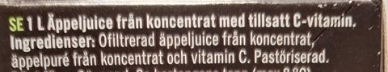
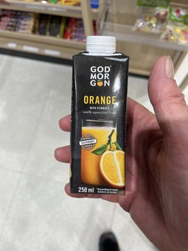

포장 사진 판독
God Morgon 사과·오렌지·오렌지 레드자몽 1 L는 포장 사진을 등록 사진과 비교합니다. 등록 바코드가 보이면 규격을 확인하며, 시연용 오렌지 250 mL도 바코드로 구별합니다.
같은 상품의 맛과 용량이 적힌 앞면이나 바코드 면을 가까이 찍어 다시 선택해 주세요.
주문 피킹 시뮬레이션 보기 별도 데모 · 주문부터 배치와 실패 복구까지
포장에서 읽은 글자
Grocery Store Dataset 원본 · Marcus Klasson · MIT 오렌지 주스 옆면 · 성분 표시와 과일 그림이 보이는 매장 사진

Grocery Store Dataset 원본 · Marcus Klasson · MIT 시연용 오렌지 주스 250mL · 바코드 면

smoothie-app · Open Food Facts 원본 · CC BY-SA 3.0

어떤 글자를 읽기 어려웠나
실제 신라면 포장 사진에서 작은 영문 글자 일부를 읽었지만 큰 한글 ‘라면’은 놓쳤습니다. 불닭볶음면처럼 이름이 잘리거나 포장이 접힌 사진도 원문을 확인해 주세요. 사진 3장의 출처와 판독 원문
등록 상품을 사진에서 얼마나 알아봤나
스웨덴 매장 사진 재시험
처음 세 입력은 보완에 사용했습니다. 마지막 두 입력은 같은 원본에서 옆에 놓인 팩을 잘라 시험했습니다. 가격표는 입력에서 제외했습니다.
| 촬영 조건 | 브라우저 상품 판정 |
|---|---|
| 사과 1 L · 앞면 일부와 옆면 | 사과주스 |
| 오렌지·레드자몽 1 L · 앞면과 윗면 | 오렌지·레드자몽 혼합주스 |
| 미등록 사과 1.75 L · 같은 매대 | 보류 |
| 오렌지·레드자몽 1 L · 옆에 놓인 팩 | 오렌지·레드자몽 혼합주스 |
| 사과 1 L · 바코드가 보이지 않는 옆 팩 | 보류 |
기존 매장 사진의 상품 인식 비교
같은 매장 사진을 두 판독기의 파일 선택창에 올렸습니다. 오렌지는 앞면과 이어진 옆면 인쇄를, 혼합주스는 포장 글자 또는 같은 팩의 브랜드·뚜껑 아래 과일 무늬를 대조합니다.
| 사진 조건 | 이전 판독기(v28) | 이번 판독기 |
|---|---|---|
| 사과 1 L 옆면 정답 | 1 / 2장 | 1 / 2장 |
| 오렌지 1 L 옆면 정답 | 3 / 8장 | 8 / 8장 |
| 오렌지·레드자몽 1 L 옆면 정답 | 4 / 5장 | 5 / 5장 |
| 등록 상품 전체 옆면 정답 | 8 / 15장 | 14 / 15장 |
| 등록 상품 전체 앞면 정답 | 32 / 45장 | 32 / 45장 |
| 미등록 레드자몽 오인 | 0 / 14장 | 0 / 14장 |
새 매장에서 촬영한 전체 옆면 평가 사진은 사과 0건, 혼합주스 0건입니다.
별도로 모은 미등록 유사 상품 사진 16장에서 등록 상품명 오인은 0건, 잘못된 주문 확정은 0건이었습니다. 7장에서는 미등록 단서를 확인했고 나머지 9장은 판정을 보류했습니다. 이 중 핀란드 사과주스 한 장은 오류를 분석한 뒤 다시 시험했습니다.
옆면 사진별 판정 · 미등록 유사 상품 사진 · 서로 다른 바코드가 함께 보일 때의 주문 판정
이전 옆면 판독 실험 · v23
같은 매장 사진을 v23과 그 이전 배포본에 각각 넣어 상품명을 비교했습니다. 마지막 행은 미등록 상품에 등록 이름을 잘못 붙인 장수입니다. 같은 진열대에서 찍은 여러 장과 이전 개발에서 확인한 사진도 포함됩니다.
| 촬영 조건 | 사진 수 | 브라우저 · 전 → 후 | Python · 전 → 후 |
|---|---|---|---|
| 옆면이 많이 보인 등록품 | 15 | 1 → 3 | 2 → 6 |
| 앞면이 보인 등록품 | 45 | 29 → 29 | 33 → 33 |
| 등록품 전체 | 60 | 30 → 32 | 35 → 39 |
| 미등록 레드자몽에 등록 이름을 붙인 경우 | 14 | 1 → 0 | 0 → 0 |
이전 버전을 평가한 매장 사진을 같은 조건으로 다시 읽었습니다. 한 상품을 여러 각도에서 찍은 사진이 포함되며, 새로 수집한 등록품 옆면 사진은 0장입니다.
이전 등록 상품 판독 실험
같은 원본 사진을 수정 전후에 한 장씩 입력했습니다. 매장 표는 바코드 중심 판독기와 옆면 보완 전 배포본의 상품명을 비교합니다. 공개 사진 표는 두 사과 사진을 검토하기 전에 동결한 첫 수정본까지의 비교입니다. Python은 주문품 외 식료품도 이름을 붙일 수 있습니다. 미등록품 열에는 등록 주문명을 잘못 붙인 경우만 셉니다. 주문 규격은 등록 바코드를 읽었을 때 별도로 확정합니다. 브라우저에는 250mL 시연 상품이 추가 등록돼 있습니다.
공식 테스트 분할의 매장 사진 74장
| 실행 경로 | 등록품 정답 | 등록품에 다른 이름 | 미등록에 등록 이름 부여 | 보류 |
|---|---|---|---|---|
| 브라우저 | 0 → 30 / 60장 | 0 → 0 | 0 → 1 / 14장 | 74 → 43 |
| Python | 0 → 35 / 60장 | 4 → 2 | 0 → 0 / 14장 | 67 → 34 |
포장 추가 등록 전에 평가한 공개 사진 8장
| 실행 경로 | 등록품 정답 | 등록품에 다른 이름 | 미등록에 등록 이름 부여 | 보류 |
|---|---|---|---|---|
| 브라우저 | 0 → 1 / 2장 | 0 → 0 | 0 → 0 / 6장 | 8 → 7 |
| Python | 1 → 0 / 2장 | 0 → 0 | 0 → 0 / 6장 | 7 → 8 |
두 사과 주스 사진의 후속 수정 확인
제조사에서 확인한 새 포장을 등록하고, 1 L 표기가 반복해 읽히면 다른 용량의 경쟁 후보를 제외하도록 Python 판정을 수정했습니다. 같은 두 사진을 다시 사용한 결과입니다. 첫 사진은 새 기준 사진과 구도가 같아 독립 성능 집계에서 제외합니다.
| 다시 읽은 사진 | 당시 브라우저 판정 | 당시 Python 판정 |
|---|---|---|
| 제조사 사과 1 L · 새로 등록한 디자인 | 사과주스 | 사과주스 |
| 비스듬히 찍은 사과 1 L · 등록에 쓰지 않은 사진 | 사과주스 | 사과주스 |
매장 사진의 상품 코드는 데이터셋이 각 품목에 연결한 ICA 상품 페이지에서 확인했습니다. 같은 제품의 여러 각도가 있고 기준 사진과 촬영 환경이 비슷한 경우도 있습니다. 이 자료는 이전 프로젝트 평가에도 사용했습니다. 매장 사진 12장은 초기 브라우저 시험에 사용했고, 추가 27장은 개발 중 미리 확인한 사진입니다. 기존에 보류했던 스웨덴산 1 L 오렌지 영양표 사진은 이번에 등록 자료로 사용해 새 정답 수에서 제외했습니다.
별도 판별기 평가
이전 규칙 평가 · 처음 보는 포장과 용량
같은 실물 사진을 수정 전후로 읽었습니다. 개발과 최종 평가에는 서로 다른 상품 코드를 배정했습니다. 이전 연구와 같은 상품이나 사진 제공처가 포함됩니다. 정답은 실제 상품에 등록 이름을 부여한 장수입니다. 보류에는 미등록 상품과 놓친 등록 상품이 모두 들어갑니다.
최종 평가 사진 10장
상품명 정답 0 → 0장 · 잘못 부여한 이름 2 → 0장
이 중 Python 등록품은 1장, 250mL까지 등록한 브라우저의 등록품은 2장입니다.
| 판정 | 정답 상품명 | 잘못 부여한 이름 | 보류 |
|---|---|---|---|
| 상품명 후보 · 수정 전 | 0 | 2 | 8 |
| 상품명 후보 · 수정 후 | 0 | 0 | 10 |
| 주문 SKU 확정 · Python | 0 | 0 | 10 |
| 주문 SKU 확정 · 브라우저 | 0 | 0 | 10 |
최종 사진에서 눈으로 바코드가 보이는 2장 중 브라우저가 올바른 코드를 읽은 사진은 2장이었습니다. 두 사진 모두 미등록 상품이어서 주문 확정을 보류했습니다.
개발 사진 결과 보기
개발 사진 3장
상품명 정답 0 → 0장 · 잘못 부여한 이름 0 → 0장
이 중 Python 등록품은 1장, 250mL까지 등록한 브라우저의 등록품은 1장입니다.
| 판정 | 정답 상품명 | 잘못 부여한 이름 | 보류 |
|---|---|---|---|
| 상품명 후보 · 수정 전 | 0 | 0 | 3 |
| 상품명 후보 · 수정 후 | 0 | 0 | 3 |
| 주문 SKU 확정 · Python | 0 | 0 | 3 |
| 주문 SKU 확정 · 브라우저 | 0 | 0 | 3 |
설계에 사용한 기존 33장 재검사
미등록 27장에 등록 이름을 잘못 붙인 경우는 6 → 1장, 등록 6장을 맞힌 경우는 1 → 0장이었습니다. 같은 맛·용량의 다른 상품 코드는 포장 글자만으로 구분하기 어렵습니다.
결과를 사진과 대조하기
- 등록 1 L 뒷면 · 실제 상품 코드 7310860007372 · 수정 후 상품명 후보 보류
- 시연용 250mL 앞면 · 실제 상품 코드 6415130089834 · 수정 후 상품명 후보 보류
- 다른 코드의 1 L 앞면 · 실제 상품 코드 6415130050490 · 수정 후 상품명 후보 보류

상품명 판별기 · 기존 주스 사진 33장
현재 Python 판독기 · 등록 6장 중 4장 정답 / 미등록 27장 중 0장에 등록 이름 부여
같은 33장을 다시 읽었습니다. 현재 정답 4장 중 3장은 판독기에 등록된 사진과 같습니다. Python은 1 L 주스 3종을 등록했고, 브라우저는 250 mL 오렌지 주스 바코드도 등록했습니다. 현재 판독기의 사진별 재시험 결과
최초 평가의 판정별 집계와 예시 사진 보기
Codespaces용 상품명 판별기를 고정한 뒤 채점한 새 주스 사진 33장입니다. 세 주스의 등록 기준은 제품 종류와 포장 규격입니다. 맛이 같아도 다른 규격에 등록 상품명을 붙이면 오답입니다.
- 등록 상품 정답
- 1 / 6
- 등록 상품 보류
- 5 / 6
- 미등록 상품에 이름 부여
- 6 / 27
| 판정 | 기존 | 수정 후 | 대상 사진 수 |
|---|---|---|---|
| 등록 상품을 맞힘 | 0 | 1 | 6 |
| 등록 상품을 다른 이름으로 판정 | 0 | 0 | 6 |
| 등록 상품을 보류 | 6 | 5 | 6 |
| 미등록 상품에 등록 이름을 붙임 | 0 | 6 | 27 |
등록 제품을 맞힌 한 장은 제조사 사진이었습니다. 일반 앞면 1장과 뒷면 4장은 모두 보류했습니다. 등록된 6장 중 실제 맛과 맞는 과일 단어는 4장에서 읽혔습니다. 같은 맛의 다른 규격에 상품명을 붙인 6장은 모두 포장 글자만으로 판정한 경우입니다.
같은 사진에서 등록 바코드까지 요구하면 33장 모두 규격 확정을 보류합니다. 등록 제품 뒷면에 실제 바코드가 보이는 사진은 확보하지 못했습니다.


보류 → 보류
축소본 · blackfatrat 제공 · CC BY-SA 3.0


보류 → 보류
축소본 · smoothie-app 제공 · CC BY-SA 3.0
등록 제품과 미등록 대조품 15장의 촬영 방향별 결과
| 촬영 형태 | 등록 사진 | 정답 전 → 후 | 미등록 사진 | 오수락 전 → 후 |
|---|---|---|---|---|
| 포장 뒷면 | 4 | 0 → 0 | 3 | 0 → 0 |
| 주변이 보이는 제품 사진 | 1 | 0 → 1 | 0 | — |
| 포장 앞면 | 1 | 0 → 0 | 6 | 0 → 0 |
별도로 측정한 사진
| 대상 | 기존 → 수정 후 |
|---|---|
| 용량이나 상품 코드가 다른 같은 맛 제품 | 미등록 18장 중 오수락 0 → 6장 |
| 이전의 7장으로 수정 사항을 개발한 결과 | 등록 6장 중 정답 0 → 6장 · 미등록 1장 중 오수락 0 → 0장 |
| 주스 외 일반 식료품을 따로 촬영한 사진 | 등록 12장 중 정답 6 → 6장 · 미등록 4장 중 오수락 0 → 0장 |
농산물 판별기 · 새 과일·채소 사진 40장
판별기를 고정한 뒤 별도로 모은 실물 사진 40장을 확인했습니다. 등록된 바나나·오이·파인애플 24장의 정답은 12장에서 15장이었습니다. 미등록 16장에 잘못 이름을 붙인 수는 0장에서 0장이었습니다.
| 품목 | 집계 기준 | 사진 수 | 기존 판정 | 추가 확인 후 |
|---|---|---|---|---|
| 아티초크 | 미등록 · 잘못 이름 붙임 | 4 | 0 | 0 |
| 바나나 | 등록 · 이름 정답 | 8 | 5 | 7 |
| 오이 | 등록 · 이름 정답 | 8 | 1 | 2 |
| 파인애플 | 등록 · 이름 정답 | 8 | 6 | 6 |
| 호박 | 미등록 · 잘못 이름 붙임 | 4 | 0 | 0 |
| 딸기 | 미등록 · 잘못 이름 붙임 | 8 | 0 | 0 |
기존 판별기가 보류한 사진에 한해, 전체 사진과 중앙 부분에서 두 번째 모델이 같은 품목을 지목하는지 확인했습니다. Codespaces에서 pickloop recognize "photo.jpg" --produce로 실행할 수 있습니다.
상품명 판별기 · 사진별 정답과 판정
각 행에서 원본 사진과 정답의 출처를 열 수 있습니다. ‘보류’는 모델이 상품명을 확정하지 못한 경우입니다.
새 사진 · 등록 제품과 미등록 대조품 15장
| 등록 정답 | 촬영 형태 | 기존 판정 | 수정 후 상품명 | 반복해 읽힌 과일 단어 | 바코드 규격 | 원본 |
|---|---|---|---|---|---|---|
| 사과주스 | 포장 뒷면 | 보류 | 보류 포장 글자 확인 | 사과 | 미확인 | 사진 · 출처 |
| 미등록 | 포장 앞면 | 보류 | 보류 포장 글자 확인 | 없음 | 미확인 | 사진 · 출처 |
| 미등록 | 포장 앞면 | 보류 | 보류 포장 글자 확인 | 없음 | 미확인 | 사진 · 출처 |
| 미등록 | 포장 뒷면 | 보류 | 보류 포장 글자 확인 | 없음 | 미확인 | 사진 · 출처 |
| 미등록 | 포장 앞면 | 보류 | 보류 포장 글자 확인 | 없음 | 미확인 | 사진 · 출처 |
| 미등록 | 포장 앞면 | 보류 | 보류 포장 글자 확인 | 없음 | 미확인 | 사진 · 출처 |
| 오렌지·레드자몽 혼합주스 | 포장 뒷면 | 보류 | 보류 포장 글자 확인 | 오렌지 · 자몽 | 미확인 | 사진 · 출처 |
| 미등록 | 포장 뒷면 | 보류 | 보류 포장 글자 확인 | 없음 | 미확인 | 사진 · 출처 |
| 미등록 | 포장 뒷면 | 보류 | 보류 포장 글자 확인 | 없음 | 미확인 | 사진 · 출처 |
| 오렌지주스 | 포장 뒷면 | 보류 | 보류 포장 글자 확인 | 없음 | 미확인 | 사진 · 출처 |
| 오렌지·레드자몽 혼합주스 | 포장 앞면 | 보류 | 보류 포장 글자 확인 | 오렌지 · 자몽 | 미확인 | 사진 · 출처 |
| 오렌지주스 | 포장 뒷면 | 보류 | 보류 포장 글자 확인 | 없음 | 미확인 | 사진 · 출처 |
| 미등록 | 포장 앞면 | 보류 | 보류 포장 글자 확인 | 없음 | 미확인 | 사진 · 출처 |
| 오렌지주스 | 주변이 보이는 제품 사진 | 보류 | 오렌지주스 포장 글자 확인 | 오렌지 | 미확인 | 사진 · 출처 |
| 미등록 | 포장 앞면 | 보류 | 보류 포장 글자 확인 | 없음 | 미확인 | 사진 · 출처 |


같은 맛 · 다른 상품 코드 18장
| 등록 정답 | 촬영 형태 | 기존 판정 | 수정 후 상품명 | 반복해 읽힌 과일 단어 | 바코드 규격 | 원본 |
|---|---|---|---|---|---|---|
| 미등록 · 오렌지주스와 같은 맛 | 포장 앞면 | 보류 | 오렌지주스 포장 글자 확인 | 오렌지 | 미확인 | 사진 · 출처 |
| 미등록 · 사과주스와 같은 맛 | 포장 앞면 | 보류 | 보류 포장 글자 확인 | 사과 | 미확인 | 사진 · 출처 |
| 미등록 · 사과주스와 같은 맛 | 포장 앞면 | 보류 | 사과주스 포장 글자 확인 | 사과 | 미확인 | 사진 · 출처 |
| 미등록 · 오렌지주스와 같은 맛 | 포장 앞면 | 보류 | 오렌지주스 포장 글자 확인 | 오렌지 | 미확인 | 사진 · 출처 |
| 미등록 · 사과주스와 같은 맛 | 포장 앞면 | 보류 | 보류 등록 포장 면·글자 확인 | 없음 | 미확인 | 사진 · 출처 |
| 미등록 · 오렌지주스와 같은 맛 | 포장 앞면 | 보류 | 오렌지주스 포장 글자 확인 | 오렌지 | 미확인 | 사진 · 출처 |
| 미등록 · 사과주스와 같은 맛 | 포장 앞면 | 보류 | 사과주스 포장 글자 확인 | 사과 | 미확인 | 사진 · 출처 |
| 미등록 · 사과주스와 같은 맛 | 포장 뒷면 | 보류 | 보류 포장 글자 확인 | 사과 | 미확인 | 사진 · 출처 |
| 미등록 · 사과주스와 같은 맛 | 포장 앞면 | 보류 | 보류 포장 글자 확인 | 사과 | 미확인 | 사진 · 출처 |
| 미등록 · 오렌지주스와 같은 맛 | 포장 앞면 | 보류 | 보류 포장 글자 확인 | 없음 | 미확인 | 사진 · 출처 |
| 미등록 · 오렌지주스와 같은 맛 | 포장 뒷면 | 보류 | 보류 바코드 확인 | 없음 | 미확인 | 사진 · 출처 |
| 미등록 · 사과주스와 같은 맛 | 포장 앞면 | 보류 | 보류 포장 글자 확인 | 사과 | 미확인 | 사진 · 출처 |
| 미등록 · 사과주스와 같은 맛 | 포장 앞면 | 보류 | 보류 포장 글자 확인 | 없음 | 미확인 | 사진 · 출처 |
| 미등록 · 사과주스와 같은 맛 | 포장 뒷면 | 보류 | 보류 포장 글자 확인 | 없음 | 미확인 | 사진 · 출처 |
| 미등록 · 오렌지주스와 같은 맛 | 포장 앞면 | 보류 | 오렌지주스 포장 글자 확인 | 오렌지 | 미확인 | 사진 · 출처 |
| 미등록 · 사과주스와 같은 맛 | 포장 앞면 | 보류 | 보류 바코드 확인 | 없음 | 미확인 | 사진 · 출처 |
| 미등록 · 오렌지주스와 같은 맛 | 포장 뒷면 | 보류 | 보류 포장 글자 확인 | 오렌지 | 미확인 | 사진 · 출처 |
| 미등록 · 오렌지·레드자몽 혼합주스와 같은 맛 | 포장 앞면 | 보류 | 보류 포장 글자 확인 | 자몽 | 미확인 | 사진 · 출처 |


개발에 사용한 이전 사진 7장
| 등록 정답 | 촬영 형태 | 기존 판정 | 수정 후 상품명 | 원본 |
|---|---|---|---|---|
| 미등록 | 별도 구분 없음 | 보류 | 보류 포장 글자 확인 | 사진 · 출처 |
| 사과주스 | 별도 구분 없음 | 보류 | 사과주스 포장 글자 확인 | 사진 · 출처 |
| 오렌지·레드자몽 혼합주스 | 별도 구분 없음 | 보류 | 오렌지·레드자몽 혼합주스 포장 글자 확인 | 사진 · 출처 |
| 오렌지주스 | 별도 구분 없음 | 보류 | 오렌지주스 포장 글자 확인 | 사진 · 출처 |
| 오렌지·레드자몽 혼합주스 | 별도 구분 없음 | 보류 | 오렌지·레드자몽 혼합주스 등록 포장 면·글자 확인 | 사진 · 출처 |
| 오렌지주스 | 별도 구분 없음 | 보류 | 오렌지주스 포장 글자 확인 | 사진 · 출처 |
| 오렌지·레드자몽 혼합주스 | 별도 구분 없음 | 보류 | 오렌지·레드자몽 혼합주스 포장 글자 확인 | 사진 · 출처 |


별도 생과일·채소 시험 16장
| 등록 정답 | 촬영 형태 | 기존 판정 | 수정 후 상품명 | 원본 |
|---|---|---|---|---|
| 미등록 | 주변이 보이는 제품 사진 | 보류 | 보류 포장 글자 확인 | 사진 · 출처 |
| 오이 | 주변이 보이는 제품 사진 | 보류 | 보류 포장 글자 확인 | 사진 · 출처 |
| 바나나 | 주변이 보이는 제품 사진 | 보류 | 보류 포장 글자 확인 | 사진 · 출처 |
| 오이 | 주변이 보이는 제품 사진 | 보류 | 보류 포장 글자 확인 | 사진 · 출처 |
| 오이 | 주변이 보이는 제품 사진 | 보류 | 보류 포장 글자 확인 | 사진 · 출처 |
| 미등록 | 주변이 보이는 제품 사진 | 보류 | 보류 포장 글자 확인 | 사진 · 출처 |
| 미등록 | 주변이 보이는 제품 사진 | 보류 | 보류 포장 글자 확인 | 사진 · 출처 |
| 파인애플 | 주변이 보이는 제품 사진 | 파인애플 | 파인애플 기존 인식기 | 사진 · 출처 |
| 파인애플 | 주변이 보이는 제품 사진 | 파인애플 | 파인애플 기존 인식기 | 사진 · 출처 |
| 미등록 | 주변이 보이는 제품 사진 | 보류 | 보류 포장 글자 확인 | 사진 · 출처 |
| 오이 | 주변이 보이는 제품 사진 | 보류 | 보류 포장 글자 확인 | 사진 · 출처 |
| 파인애플 | 주변이 보이는 제품 사진 | 보류 | 보류 포장 글자 확인 | 사진 · 출처 |
| 파인애플 | 주변이 보이는 제품 사진 | 파인애플 | 파인애플 기존 인식기 | 사진 · 출처 |
| 바나나 | 주변이 보이는 제품 사진 | 바나나 | 바나나 기존 인식기 | 사진 · 출처 |
| 바나나 | 주변이 보이는 제품 사진 | 바나나 | 바나나 기존 인식기 | 사진 · 출처 |
| 바나나 | 주변이 보이는 제품 사진 | 바나나 | 바나나 기존 인식기 | 사진 · 출처 |


Codespaces에서 81품목 판별기 실행하기
- 포장에서 추정한 맛
- 용량 근거
- 카탈로그 상품명 후보
- 포장에서 읽힌 과일 단어
- 주문 규격 확인
- 사진에서 읽은 상품 코드
내 사진을 판별하려면 프로젝트 Codespaces에서 아래 명령을 실행한 뒤 포트 8000의 /recognition.html#try-photo를 여세요. 사진 선택 창에서 실행할 수 있습니다.
pickloop serve --host 0.0.0.0 --port 8000터미널에서도 판별할 수 있습니다. 프로젝트에 사진을 올리고 아래 명령을 실행하세요. photo.jpg를 올린 파일명으로 바꾸면 됩니다.
pickloop recognize "photo.jpg"photo_name은 카탈로그 상품명 후보입니다. printed_fruit_words에는 포장에서 반복해 읽힌 과일 단어가 나옵니다. confirmed_order_sku는 사진에서 등록 바코드를 읽고 포장 표기와 충돌이 없을 때만 채워집니다.
pickloop recognize "photo.jpg" --require-gtin등록한 1L 주스 3종의 규격까지 요구하는 명령입니다. 규격을 확인할 수 없으면 prediction은 UNKNOWN입니다.